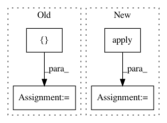

0bf56c5e8db53e152e7095087499d072018283e6,src/mjsynth.py,,threaded_input_pipeline,#,94
Before Change
// Pad batches to max data size (bucketing it all into the same bucket)
dataset = dataset.apply(tf.contrib.data.bucket_by_sequence_length
(element_length_func=_element_length_fn,
bucket_batch_sizes=[batch_size, batch_size],
bucket_boundaries=[0]))
dataset = dataset.map(lambda image,
width, label,
length, text, filename:
(image, width,
tf.cast(tf.deserialize_many_sparse(label, tf.int64),
tf.int32),
length, text, filename))
num_epochs = None
// Repeat for num_epochs
dataset = dataset.repeat(num_epochs)
return dataset
def _element_length_fn(image, width, label, length, text, filename):
After Change
// Hack -- probably a better way to do this! Just want dynamic padding!
// Pad batches to max data size (bucketing it all into the same bucket)
dataset = dataset.apply(tf.contrib.data.bucket_by_sequence_length
(element_length_func=_element_length_fn,
bucket_batch_sizes=[0, 10],
bucket_boundaries=[0]))
dataset = dataset.map(lambda image,
width, label,
length, text, filename:
In pattern: SUPERPATTERN
Frequency: 3
Non-data size: 4
Instances
Project Name: weinman/cnn_lstm_ctc_ocr
Commit Name: 0bf56c5e8db53e152e7095087499d072018283e6
Time: 2018-06-29
Author: am.lamsal@gmail.com
File Name: src/mjsynth.py
Class Name:
Method Name: threaded_input_pipeline
Project Name: weinman/cnn_lstm_ctc_ocr
Commit Name: 96fad3497a4373cc289f9e7c4272d4722a22f381
Time: 2018-06-20
Author: am.lamsal@gmail.com
File Name: src/mjsynth.py
Class Name:
Method Name: bucketed_input_pipeline
Project Name: weinman/cnn_lstm_ctc_ocr
Commit Name: f72e30b86039b53dcced080dc999e1a9fb052c49
Time: 2018-06-19
Author: am.lamsal@gmail.com
File Name: src/mjsynth.py
Class Name:
Method Name: bucketed_input_pipeline